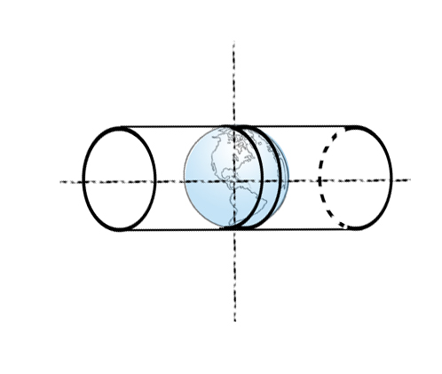
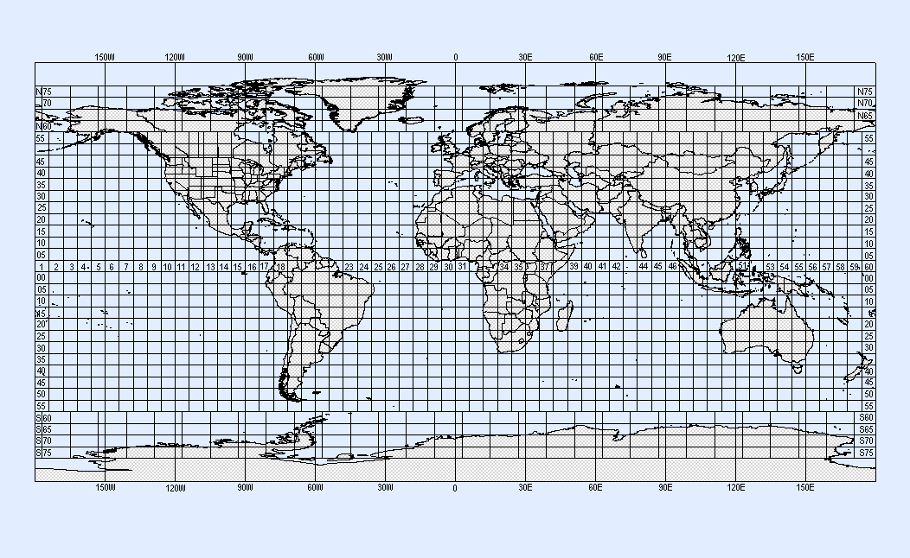
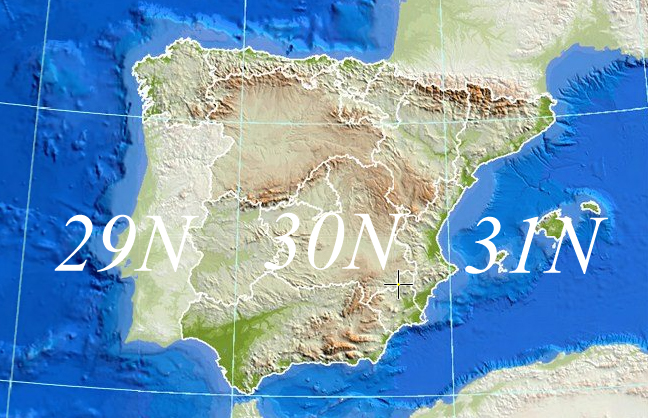
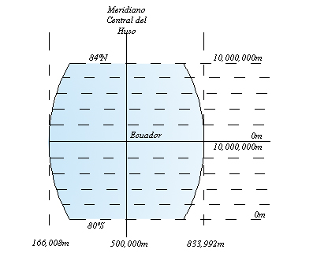
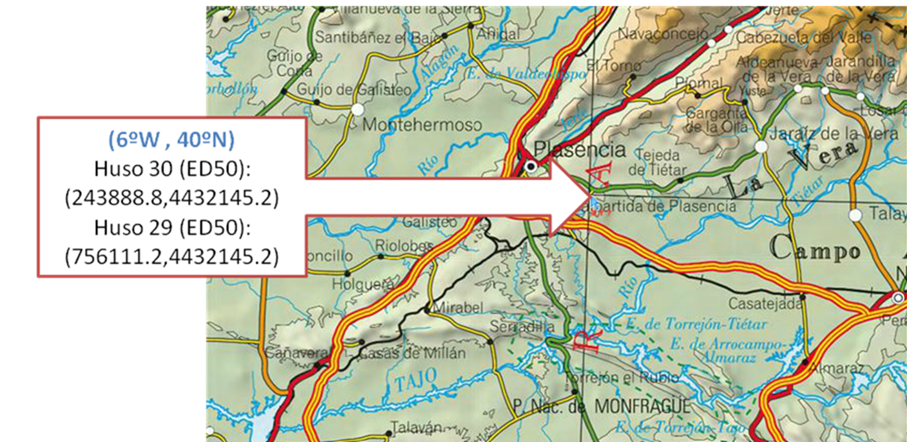

La proyección UTM, además de ser el sistema de proyección oficial de España, es uno de los sistemas cartográficos más utilizados en el mundo para representar la superficie terrestre.
¿Qué es la proyección UTM?
La UTM es una variante de la proyección de Mercator, pero modificada para minimizar las distorsiones cuando se representa el terreno en regiones pequeñas.
Se basa en la proyección transversa cilíndrica conforme, lo que significa que:
- Usa un cilindro imaginario que "envuelve" la Tierra, pero colocado de forma vertical (transversal al eje de rotación).
- Esto permite proyectar meridianos y paralelos en regiones más pequeñas y reducir distorsiones de forma y escala.

¿Cómo funciona la UTM?
División de la Tierra en zonas
- La superficie terrestre se divide en 60 zonas de 6° de longitud cada una, numeradas del 1 al 60 de oeste a este, comenzando desde el meridiano de Greenwich.
- Cada zona cubre una franja de 6° de longitud, desde los 80° de latitud sur hasta los 84° de latitud norte. Fuera de estos límites, la UTM no es aplicable.

Meridiano central
- Cada zona tiene un meridiano central, que se toma como referencia para minimizar las distorsiones dentro de esa zona.
- Por ejemplo, en la zona 30 (que incluye parte de España y Portugal), el meridiano central es el -3° de longitud.

Principales características
- Conformidad: Conserva las formas y los ángulos, lo que la hace ideal para mapas topográficos y navegación terrestre.
- Reducción de distorsiones: Cada zona está diseñada para minimizar las distorsiones dentro de su franja. Sin embargo, fuera de su zona, las distorsiones aumentan rápidamente.
- Medidas en metros: En lugar de usar grados de latitud y longitud, la UTM usa un sistema de coordenadas en metros, lo que facilita el cálculo de distancias.
Coordenadas UTM
La posición de un punto en la UTM se define con:
Coordenada X (abscisa): La distancia en metros hacia el este desde el meridiano central de la zona. Para evitar números negativos, se suma un valor de 500,000 metros al meridiano central (falsa coordenada este).
Coordenada Y (ordenada): La distancia en metros desde el ecuador hacia el norte o el sur.
- En el hemisferio norte, se mide desde el ecuador.
- En el hemisferio sur, se añade un valor de 10,000,000 metros para evitar números negativos.

Ventajas y limitaciones
Ventajas:
- Conserva los ángulos.
- No distorsiona las superficies en grandes magnitudes (por debajo de los 80º de latitud).
- Un punto queda fácilmente localizable.
- Es de empleo universal.
Inconvenientes:
- La UTM no es adecuada para representar áreas extensas, ya que las distorsiones aumentan fuera de las zonas definidas.
- Existiría duplicidad de coordenadas si no se indica el huso.
